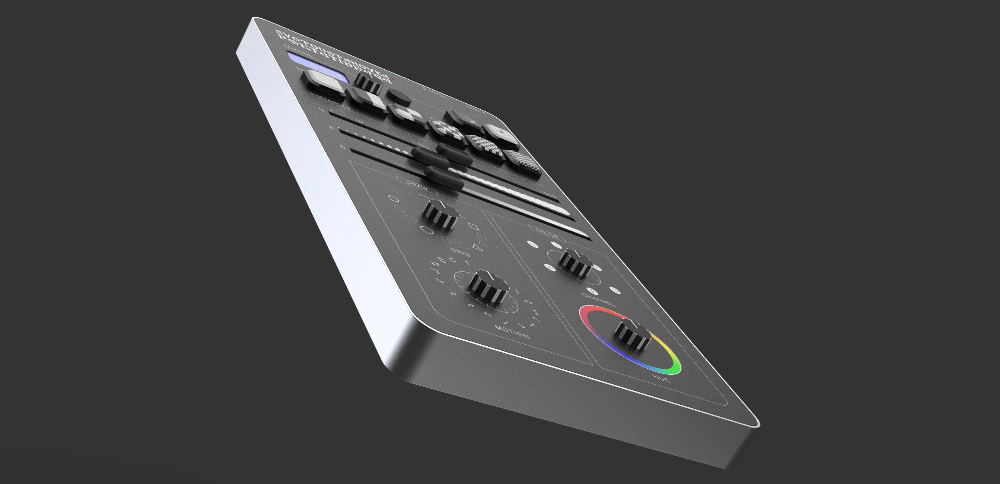
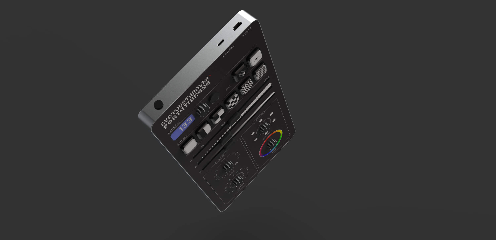
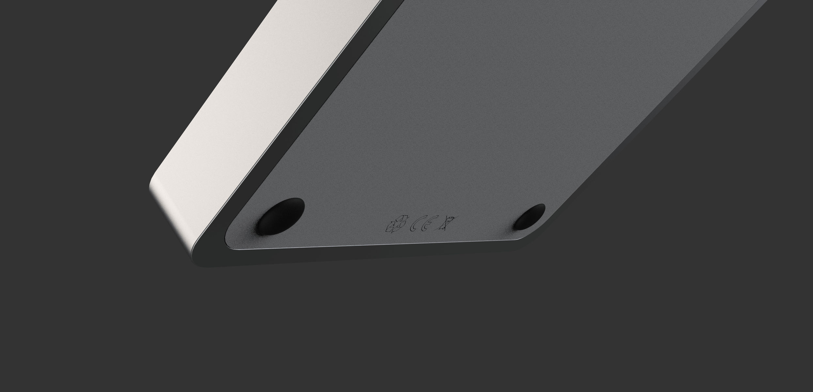
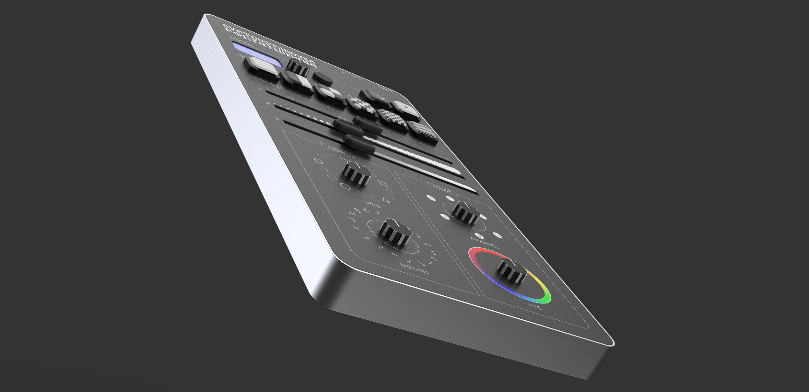
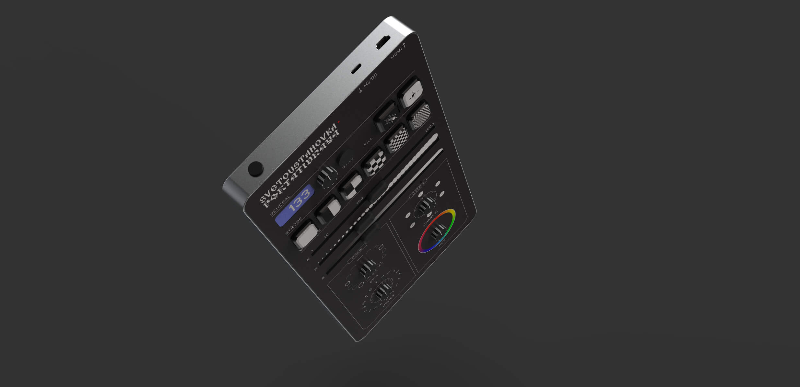
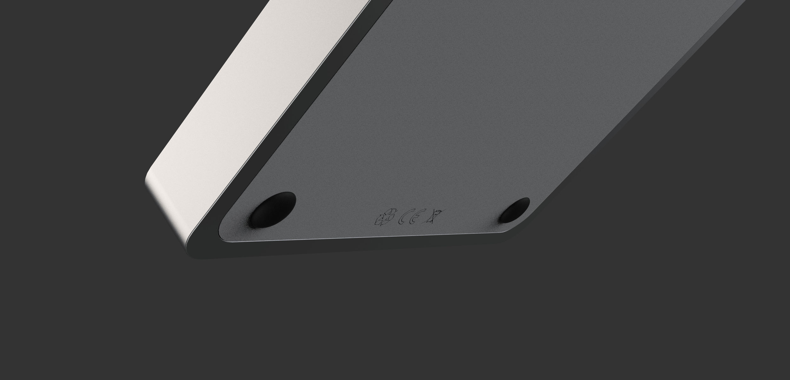

Project
Process book
Svetoustanovka Portativnaya — Martin Lezhenin
Svetoustanovka Portativnaya is a portable light controller which reaches to bridge the gap between cheap music-reactive chinese lights and elaborate stage equipment, creating an instrument which will allow the user to become an eL-J – light jockey. The machine generates video-graphic output meant for projection through a sequence of manually selected variables – from the number of particles and their color to the complexity of the grid upon which they are drawn – all their movement paced to the bpm of the "currently playing".
By carefully crafting the tool and its ways of use, Martin wants to establish a new performative action of responding to sound rather visualising it, simultaneously allowing anyone to create a light show from home, which becomes quite handy & relevant in the current times.
 




